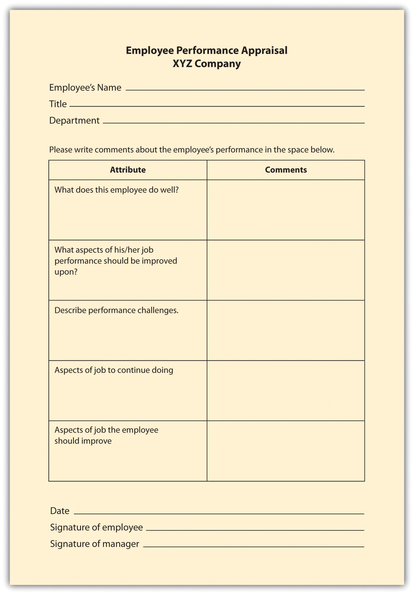
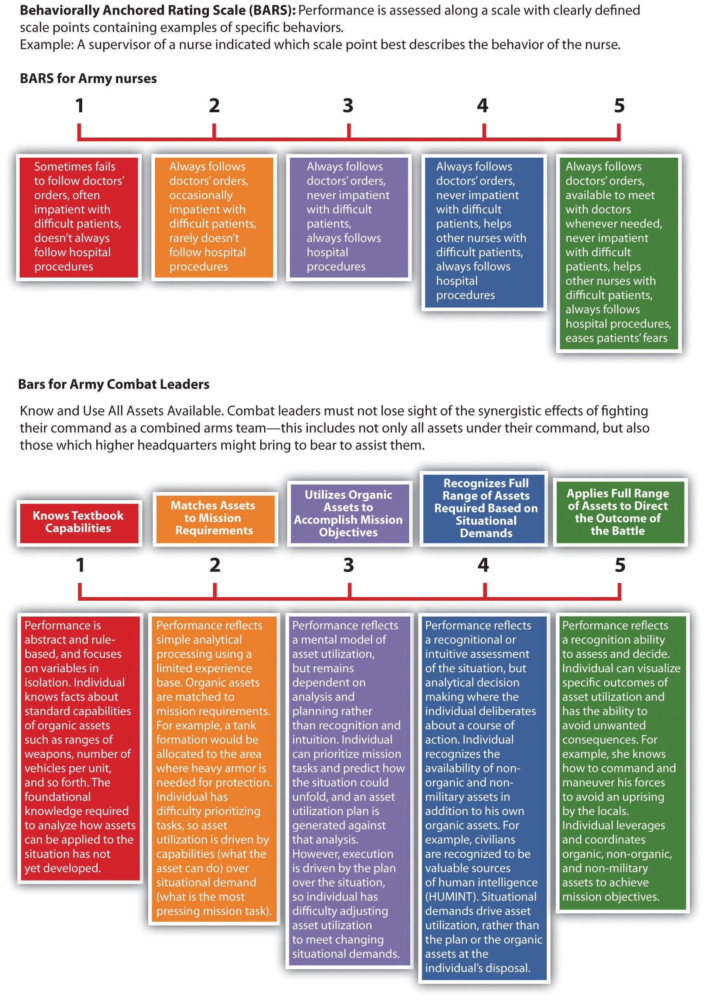
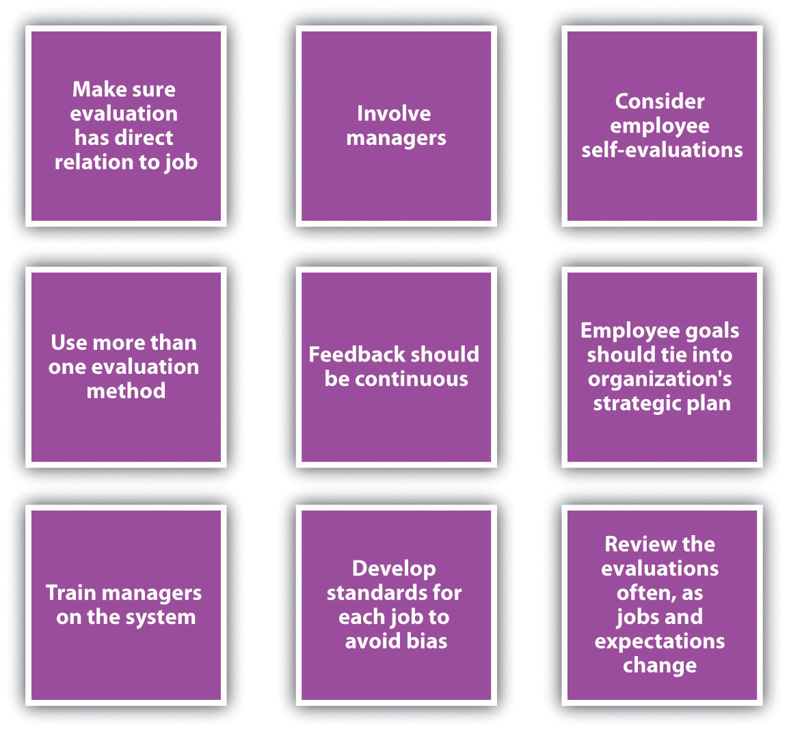

As you wake up this morning, you think about the performance evaluation you will give one of your employees, Sean, later this morning. Sean has been with your company for two years, and over the last six months his performance has begun to slide. As the manager, it is your responsibility to talk with him about performance, which you have done on several occasions. However, the performance evaluation will make his nonperformance more formalized. You know that Sean has had some personal troubles that can account for some of the performance issues, but despite this, you really need to get his performance up to par. Your goal in the performance evaluation interview today is to create an improvement plan for Sean, while documenting his nonperformance.
When you arrive at work, you look over the essay rating part of Sean’s evaluation. It details two client project deadlines that were missed, as well as the over-budget amounts of the two client projects. It was Sean’s responsibility to oversee both aspects of this project. When Sean arrives at your office, you greet him, ask him to take a seat, and begin to discuss the evaluation with him.
“Sean, while you have always been a high performer, these last few months have been lackluster. On two of your projects, you were over budget and late. The client commented on both of these aspects when it filled out the client evaluation. As a result, you can see this is documented in your performance evaluation.”
Using defensive nonverbal language, Sean says, “Missing the project deadlines and budget wasn’t my fault. Emily said everything was under control, and I trusted her. She is the one who should have a bad performance review.”
You say, “Ultimately, as the account director, you are responsible, as outlined in your job description. As you know, it is important to manage the accountability within your team, and in this case, you didn’t perform. In fact, in your 360 reviews, several of your colleagues suggested you were not putting in enough time on the projects and seemed distracted.”
“I really dislike those 360 reviews. It really is just a popularity contest, anyway,” Sean says. “So, am I fired for these two mistakes?” You have worked with people who exhibited this type of defensive behavior before, and you know it is natural for people to feel like they need to defend themselves when having this type of conversation. You decide to move the conversation ahead and focus on future behavior rather than past behavior.
You say, “Sean, you normally add a lot of value to the organization. Although these issues will be documented in your performance evaluation, I believe you can produce high-quality work. As a result, let’s work together to develop an improvement plan so you can continue to add value to the organization. The improvement plan addresses project deadlines and budgets, and I think you will find it helpful for your career development.”
Sean agrees begrudgingly and you begin to show him the improvement plan document the company uses, so you can fill it out together.
When you head home after work, you think about the day’s events and about Sean. As you had suspected, he was defensive at first but seemed enthusiastic to work on the improvement plan after you showed him the document. You feel positive that this performance evaluation was a step in the right direction to ensure Sean continues to be a high producer in the company, despite these mistakes.
The author introduces the chapter on employee assessment.
A performance evaluation systemA systematic way to examine how well an employee is performing in his or her job. is a systematic way to examine how well an employee is performing in his or her job. If you notice, the word systematic implies the performance evaluation process should be a planned system that allows feedback to be given in a formal—as opposed to informal—sense. Performance evaluations can also be called performance appraisals, performance assessments, or employee appraisals.
There are four reasons why a systematic performance evaluation system should be implemented. First, the evaluation process should encourage positive performance and behavior. Second, it is a way to satisfy employee curiosity as to how well they are performing in their job. It can also be used as a tool to develop employees. Lastly, it can provide a basis for pay raises, promotions, and legal disciplinary actions.
There are a number of things to consider before designing or revising an existing performance appraisal system. Some researchers suggest that the performance appraisal system is perhaps one of the most important parts of the organization,J. Lawrie, “Prepare for a Performance Appraisal,” Personnel Journal 69 (April 1990): 132–36. while others suggest that performance appraisal systems are ultimately flawed,Marjorie Derven, “The Paradox of Performance Appraisals,” Personnel Journal 69 (February 1990): 107–11. making them worthless. For the purpose of this chapter, let’s assume we can create a performance appraisal system that will provide value to the organization and the employee. When designing this process, we should recognize that any process has its limitations, but if we plan it correctly, we can minimize some of these.
The first step in the process is to determine how often performance appraisals should be given. Please keep in mind that managers should constantly be giving feedback to employees, and this process is a more formal way of doing so. Some organizations choose to give performance evaluations once per year, while others give them twice per year, or more. The advantage to giving an evaluation twice per year, of course, is more feedback and opportunity for employee development. The downside is the time it takes for the manager to write the evaluation and discuss it with the employee. If done well, it could take several hours for just one employee. Depending on your organization’s structure, you may choose one or the other. For example, if most of your managers have five or ten people to manage (this is called span of controlThe number of employees each manager manages.), it might be worthwhile to give performance evaluations more than once per year, since the time cost isn’t high. If most of your managers have twenty or more employees, it may not be feasible to perform this process more than once per year. To determine costs of your performance evaluations, see Table 11.1 "Estimating the Costs of Performance Evaluations". Asking for feedback from managers and employees is also a good way to determine how often performance evaluations should be given.
Table 11.1 Estimating the Costs of Performance Evaluations
| Narrow Span of Control | |
|---|---|
| Average span of control | 8 |
| Average time to complete one written review | 1 hour |
| Average time to discuss with employee | 1 hour |
| Administrative time to set up meetings with employees | 1/2 hour |
| Wider Span of Control | |
|---|---|
| Average span of control | 25 |
| Average time to complete one written review | 1 hour |
| Average time to discuss with employee | 1 hour |
| Administrative time to set up meetings with employees | 1 hour |
Once you have the number of hours it takes, you can multiply that by your manager’s hourly pay to get an estimated cost to the organization
16 hours × $50 per hour = $850 51 hours × $50 per hour = $2550Should pay increases be tied to performance evaluations? This might be the second consideration before development of a performance evaluation process. There is research that shows employees have a greater acceptance of performance reviews if the review is linked to rewards.Brendan Bannister and David Balkin, “Performance Evaluation and Compensation Feedback Messages: An Integrated Model,” Journal of Occupational Psychology 63 (June 1990): 97–111.
The third consideration should include goal setting. In other words, what goals does the organization hope to achieve with the performance appraisal process?
Once the frequency, rewards, and goals have been determined, it is time to begin to formalize the process. First, we will need to develop the actual forms that will be used to evaluate each job within the organization. Every performance evaluation should be directly tied with that employee’s job description.
Determining who should evaluate the performance of the employee is the next decision. It could be their direct manager (most common method), subordinates, customers or clients, self, and/or peers. Table 11.2 "Advantages and Disadvantages of Each Source for Performance Evaluations" shows some of the advantages and disadvantages for each source of information for performance evaluations. Ultimately, using a variety of sources might garner the best results.
A 360-degree performance appraisalA method to appraise performance by using several sources to measure the employee’s effectiveness. method is a way to appraise performance by using several sources to measure the employee’s effectiveness. Organizations must be careful when using peer-reviewed information. For example, in the Mathewson v. Aloha Airlines case, peer evaluations were found to be retaliatory against a pilot who had crossed picket lines during the pilot’s union strike against a different airline.
Management of this process can be time-consuming for the HR professional. That’s why there are many software programs available to help administer and assess 360 review feedback. Halogen 360, for example, is used by Princess Cruises and media companies such as MSNBC.Halogen Software, accessed March 22, 2011, http://www.halogensoftware.com. This type of software allows the HR professional to set criteria and easily send links to customers, peers, or managers, who provide the information requested. Then the data are gathered and a report is automatically generated, which an employee can use for quick feedback. Other similar types of software include Carbon360 and Argos.
Before we begin to develop our performance review process, it is important to note some of the errors that can occur during this process. First, halo effects can occur when the source or the rater feels one aspect of the performance is high and therefore rates all areas high. A mistake in rating can also occur when we compare one employee to another, as opposed to the job description’s standards. Sometimes halo effects will occur because the rater is uncomfortable rating someone low on a performance assessment item. Of course, when this occurs, it makes the performance evaluation less valuable for employee development. Proper training on how to manage a performance appraisal interview is a good way to avoid this. We discuss this in Section 11.3.4 "Performance Appraisal Interviews".
Validity issues are the extent to which the tool measures the relevant aspects of performance. The aspects of performance should be based on the key skills and responsibilities of the job, and these should be reviewed often to make sure they are still applicable to the job analysis and description.
Reliability refers to how consistent the same measuring tool works throughout the organization (or job title). When we look at reliability in performance appraisals, we ask ourselves if two raters were to rate an employee, how close would the ratings be? If the ratings would be far apart from one another, the method may have reliability issues. To prevent this kind of issue, we can make sure that performance standards are written in a way that will make them measurable. For example, instead of “increase sales” as a performance standard, we may want to say, “increase sales by 10 percent from last year.” This performance standard is easily measured and allows us to ensure the accuracy of our performance methods.
AcceptabilityA possible error in performance evaluation, refers to how well the members of the organization, managers and employees, accept the performance evaluation tool as a valid measure of performance. refers to how well members of the organization, manager and employees, accept the performance evaluation tool as a valid measure of performance. For example, let’s assume the current measurement tools of Blewett Gravel, Inc. are in place and show validity for each job function. However, managers don’t think the tool is useful because they take too much time. As a result, they spend minimal time on the evaluation. This could mean the current process is flawed because of acceptability error.
Another consideration is the specificityA possible error in performance evaluations that tells employees the job expectations and how the expectations can be met., which tells employees the job expectations and how they can be met. If they are not specific enough, the tool is not useful to the employee for development or to the manager to ensure the employee is meeting expectations. Finally, after we have developed our process, we need to create a time line and educate managers and employees on the process. This can be done through formal training and communicated through company blogs or e-mails. According to Robert Kent,Robert Kent, “Why You Should Think Twice about 360 Performance Reviews,” ManagerWise, accessed March 22, 2011, http://www.managerwise.com/article.phtml?id=128. teaching people how to receive benefit from the feedback they receive can be an important part of the process as well.
The legality of performance appraisals was questioned in 1973 in Brito v. Zia, in which an employee was terminated based on a subjective performance evaluation. Following this important case, employers began to rethink their performance evaluation system and the legality of it.
The Civil Service Reform Act of 1978 set new standards for performance evaluation. Although these standards related only to public sector employees, the Reform Act began an important trend toward making certain performance evaluations were legal. The Reform Act created the following criteria for performance appraisals in government agencies:
Early performance appraisal research can provide us a good example as to why we should be concerned with the legality of the performance appraisal process. Holley and FieldHubert Field and William Holley, “The Relationship of Performance Appraisal System Characteristics to Verdicts in Selected Employment Discrimination Cases,” Academy of Management Journal 25, no. 2 (1982): 392–406. analyzed sixty-six legal cases that involved discrimination and performance evaluation. Of the cases, defendants won thirty-five of the cases. The authors of the study determined that the cases that were won by the defendant had similar characteristics:
This tells us that the following considerations should be met when developing our performance appraisal process:
Now that we have discussed some of the pitfalls of performance appraisals, we can begin to discuss how to develop the process of performance evaluations.
Table 11.2 Advantages and Disadvantages of Each Source for Performance Evaluations
| Source | Advantages | Disadvantages |
|---|---|---|
| Manager/Supervisor | Usually has extensive knowledge of the employee’s performance and abilities | Bias |
| Favoritism | ||
| Self | Self-analysis can help with employee growth | In the employee’s interest to inflate his or her own ratings |
| Peer | Works well when the supervisor doesn’t always directly observe the employee | Relationships can create bias in the review |
| Can bring a different perspective, since peers know the job well | If evaluations are tied to pay, this can put both the employee and the peer in an awkward situation | |
| If confidential, may create mistrust within the organization | ||
| Customer/Client | Customers often have the best view of employee behavior | Can be expensive to obtain this feedback |
| Can enhance long-term relationships with the customer by asking for feedback | Possible bias | |
| Subordinate | Data garnered can include how well the manager treats employees | Possible retaliation if results are not favorable |
| Can determine if employees feel there is favoritism within their department | Rating inflation | |
| Subordinates may not understand the “big picture” and rate low as a result | ||
| Can be used as a self-development tool for managers | If confidential, may create mistrust within the organization | |
| If nothing changes despite the evaluation, could create motivational issues among employees |
What are the steps we should take when developing a performance review process?
It probably goes without saying that different industries and jobs need different kinds of appraisal methods. For our purposes, we will discuss some of the main ways to assess performance in a performance evaluation form. Of course, these will change based upon the job specifications for each position within the company. In addition to industry-specific and job-specific methods, many organizations will use these methods in combination, as opposed to just one method. There are three main methods of determining performance. The first is the trait methodA category of performance evaluation in which managers look at an employee’s specific traits in relation to the job, such as friendliness to the customer., in which managers look at an employee’s specific traits in relation to the job, such as friendliness to the customer. The behavioral methodA category of performance evaluation in which managers look at individual actions within a specific job. looks at individual actions within a specific job. Comparative methodsA category of performance evaluation in which managers compare one employee with other employees. compare one employee with other employees. Results methodsA category of performance evaluation in which managers are focused on the accomplishments of the employee, such as whether or not they met a quota. are focused on employee accomplishments, such as whether or not employees met a quota.
Within the categories of performance appraisals, there are two main aspects to appraisal methods. First, the criteriaIn performance evaluations, the aspects the employee is being evaluated on. are the aspects the employee is actually being evaluated on, which should be tied directly to the employee᾿s job description. Second, the ratingThe type of scale that will be used to rate each criterion in a performance evaluation. is the type of scale that will be used to rate each criterion in a performance evaluation: for example, scales of 1–5, essay ratings, or yes/no ratings. Tied to the rating and criteria is the weighting each item will be given. For example, if “communication” and “interaction with client” are two criteria, the interaction with the client may be weighted more than communication, depending on the job type. We will discuss the types of criteria and rating methods next.
The graphic rating scaleThis type of performance evaluation lists traits required for the job and asks the source to rate the individual on each attribute., a behavioral method, is perhaps the most popular choice for performance evaluations. This type of evaluation lists traits required for the job and asks the source to rate the individual on each attribute. A discrete scaleA scale used in performance evaluations, uses a number of different points, such as a 1–10 scale. is one that shows a number of different points. The ratings can include a scale of 1–10; excellent, average, or poor; or meets, exceeds, or doesn’t meet expectations, for example. A continuous scaleA scale used in performance evaluations that uses a continuum; the manager puts a mark on the continuum that best represents the employee’s performance. shows a scale and the manager puts a mark on the continuum scale that best represents the employee’s performance. For example:
| Poor | — | — | — | — | — | — | — | — | Excellent |
The disadvantage of this type of scale is the subjectivity that can occur. This type of scale focuses on behavioral traits and is not specific enough to some jobs. Development of specific criteria can save an organization in legal costs. For example, in Thomas v. IBM, IBM was able to successfully defend accusations of age discrimination because of the objective criteria the employee (Thomas) had been rated on.
Many organizations use a graphic rating scale in conjunction with other appraisal methods to further solidify the tool’s validity. For example, some organizations use a mixed standard scaleSimilar to a graphic rating scale, this scale includes a series of mixed statements representing excellent, average, and poor performance, and the manager is asked to rate a “+” (performance is better than stated), “0” (performance is at stated level), or “−” (performance is below stated level)., which is similar to a graphic rating scale. This scale includes a series of mixed statements representing excellent, average, and poor performance, and the manager is asked to rate a “+” (performance is better than stated), “0” (performance is at stated level), or “−” (performance is below stated level). Mixed standard statements might include the following:
An example of a graphic rating scale is shown in Figure 11.1 "Example of Graphic Rating Scale".
In an essay appraisalA type of performance appraisal in which the source answers a series of questions about the employee’s performance in essay form., the source answers a series of questions about the employee’s performance in essay form. This can be a trait method and/or a behavioral method, depending on how the manager writes the essay. These statements may include strengths and weaknesses about the employee or statements about past performance. They can also include specific examples of past performance. The disadvantage of this type of method (when not combined with other rating systems) is that the manager’s writing ability can contribute to the effectiveness of the evaluation. Also, managers may write less or more, which means less consistency between performance appraisals by various managers.
A checklist method for performance evaluations lessens the subjectivity, although subjectivity will still be present in this type of rating system. With a checklist scaleA performance evaluation method in which a series of questions is asked and the manager simply responds yes or no to the questions., a series of questions is asked and the manager simply responds yes or no to the questions, which can fall into either the behavioral or the trait method, or both. Another variation to this scale is a check mark in the criteria the employee meets, and a blank in the areas the employee does not meet. The challenge with this format is that it doesn’t allow more detailed answers and analysis of the performance criteria, unless combined with another method, such as essay ratings. A sample of a checklist scale is provided in Figure 11.3 "Example of Checklist Scale".
Figure 11.1 Example of Graphic Rating Scale

Figure 11.2 Example of Essay Rating
Figure 11.3 Example of Checklist Scale

This method of appraisal, while more time-consuming for the manager, can be effective at providing specific examples of behavior. With a critical incident appraisalA performance evaluation method in which the manager is asked to record examples of effective behavior and ineffective behavior of the employee during the time period between evaluations., the manager records examples of the employee’s effective and ineffective behavior during the time period between evaluations, which is in the behavioral category. When it is time for the employee to be reviewed, the manager will pull out this file and formally record the incidents that occurred over the time period. The disadvantage of this method is the tendency to record only negative incidents instead of postive ones. However, this method can work well if the manager has the proper training to record incidents (perhaps by keeping a weekly diary) in a fair manner. This approach can also work well when specific jobs vary greatly from week to week, unlike, for example, a factory worker who routinely performs the same weekly tasks.
For certain jobs in which productivity is most important, a work standards approachA performance evaluation method in which a minimum level of expectation is set and the employee’s performance evaluation is based on this minimum level of productivity. could be the more effective way of evaluating employees. With this results-focused approach, a minimum level is set and the employee’s performance evaluation is based on this level. For example, if a sales person does not meet a quota of $1 million, this would be recorded as nonperforming. The downside is that this method does not allow for reasonable deviations. For example, if the quota isn’t made, perhaps the employee just had a bad month but normally performs well. This approach works best in long-term situations, in which a reasonable measure of performance can be over a certain period of time. This method is also used in manufacuring situations where production is extremely important. For example, in an automotive assembly line, the focus is on how many cars are built in a specified period, and therefore, employee performance is measured this way, too. Since this approach is centered on production, it doesn’t allow for rating of other factors, such as ability to work on a team or communication skills, which can be an important part of the job, too.
In a ranking method systemEmployees in a particular department are ranked based on their value to the manager or supervisor, which is used as a performance evaluation method. (also called stack ranking), employees in a particular department are ranked based on their value to the manager or supervisor. This system is a comparative method for performance evaluations.The manager will have a list of all employees and will first choose the most valuable employee and put that name at the top. Then he or she will choose the least valuable employee and put that name at the bottom of the list. With the remaining employees, this process would be repeated. Obviously, there is room for bias with this method, and it may not work well in a larger organization, where managers may not interact with each employee on a day-to-day basis.
To make this type of evaluation most valuable (and legal), each supervisor should use the same criteria to rank each individual. Otherwise, if criteria are not clearly developed, validity and halo effects could be present. The Roper v. Exxon Corp case illustrates the need for clear guidelines when using a ranking system. At Exxon, the legal department attorneys were annually evaluated and then ranked based on input from attorneys, supervisors, and clients. Based on the feedback, each attorney for Exxon was ranked based on their relative contribution and performance. Each attorney was given a group percentile rank (i.e., 99 percent was the best-performing attorney). When Roper was in the bottom 10 percent for three years and was informed of his separation with the company, he filed an age discrimination lawsuit. The courts found no correlation between age and the lowest-ranking individuals, and because Exxon had a set of established ranking criteria, they won the case.Richard Grote, Forced Ranking: Making Performance Management Work (Boston: Harvard Business School Press, 2005).
Another consideration is the effect on employee morale should the rankings be made public. If they are not made public, morale issues may still exist, as the perception might be that management has “secret” documents.
Critics have long said that a forced ranking system can be detrimental to morale; it focuses too much on individual performance as opposed to team performance. Some say a forced ranking system promotes too much competition in the workplace. However, many Fortune 500 companies use this system and have found it works for their culture. General Electric (GE) used perhaps one of the most well-known forced ranking systems. In this system, every year managers placed their employees into one of three categories: “A” employees are the top 20 percent, “B” employees are the middle 70 percent, and “C” performers are the bottom 10 percent. In GE’s system, the bottom 10 percent are usually either let go or put on a performance plan. The top 20 percent are given more responsibility and perhaps even promoted. However, even GE has reinvented this stringent forced ranking system. In 2006, it changed the system to remove references to the 20/70/10 split, and GE now presents the curve as a guideline. This gives more freedom for managers to distribute employees in a less stringent manner.“The Struggle to Measure Performance,” BusinessWeek, January 9, 2006, accessed August 15, 2011, http://www.businessweek.com/magazine/content/06_02/b3966060.htm.
The advantages of a forced ranking system include that it creates a high-performance work culture and establishes well-defined consequences for not meeting performance standards. In recent research, a forced ranking system seems to correlate well with return on investment to shareholders. For example, the studyLisa Sprenkel, “Forced Ranking: A Good Thing for Business?” Workforce Management, n.d., accessed August 15, 2011, http://homepages.uwp.edu/crooker/790-iep-pm/Articles/meth-fd-workforce.pdf. shows that companies who use individual criteria (as opposed to overall performance) to measure performance outperform those who measure performance based on overall company success. To make a ranking system work, it is key to ensure managers have a firm grasp on the criteria on which employees will be ranked. Companies using forced rankings without set criteria open themselves to lawsuits, because it would appear the rankings happen based on favoritism rather than quantifiable performance data. For example, Ford in the past used forced ranking systems but eliminated the system after settling class action lawsuits that claimed discrimination.Mark Lowery, “Forcing the Issue,” Human Resource Executive Online, n.d., accessed August 15, 2011, http://www.hrexecutive.com/HRE/story.jsp?storyId=4222111&query=ranks. Conoco also has settled lawsuits over its forced ranking systems, as domestic employees claimed the system favored foreign workers.Mark Lowery, “Forcing the Issue,” Human Resource Executive Online, n.d., accessed August 15, 2011, http://hre.lrp.com/HRE/story.jsp?query=ranking&storyId=4222111. To avoid these issues, the best way to develop and maintain a forced ranking system is to provide each employee with specific and measurable objectives, and also provide management training so the system is executed in a fair, quantifiable manner.
In a forced distribution system, like the one used by GE, employees are ranked in groups based on high performers, average performers, and nonperformers. The trouble with this system is that it does not consider that all employees could be in the top two categories, high or average performers, and requires that some employees be put in the nonperforming category.
In a paired comparison system, the manager must compare every employee with every other employee within the department or work group. Each employee is compared with another, and out of the two, the higher performer is given a score of 1. Once all the pairs are compared, the scores are added. This method takes a lot of time and, again, must have specific criteria attached to it when comparing employees.
How can you make sure the performance appraisal ties into a specific job description?
Management by objectives (MBOs)A type of performance appraisal in which the manager and employee work together to develop objectives, and at the end of the period the employee is measured on whether he or she met the objectives. is a concept developed by Peter Drucker in his 1954 book The Practice of Management.Peter Drucker, The Practice of Management (New York: Harper, 2006). This method is results oriented and similar to the work standards approach, with a few differences. First, the manager and employee sit down together and develop objectives for the time period. Then when it is time for the performance evaluation, the manager and employee sit down to review the goals that were set and determine whether they were met. The advantage of this is the open communication between the manager and the employee. The employee also has “buy-in” since he or she helped set the goals, and the evaluation can be used as a method for further skill development. This method is best applied for positions that are not routine and require a higher level of thinking to perform the job. To be efficient at MBOs, the managers and employee should be able to write strong objectives. To write objectives, they should be SMART:George T. Doran, “There’s a S.M.A.R.T. Way to Write Management’s Goals and Objectives,” Management Review 70, no. 11 (1981): 35.
An example of how to work with an employee to set MBOs.
To make MBOs an effective performance evaluation tool, it is a good idea to train managers and determine which job positions could benefit most from this type of method. You may find that for some more routine positions, such as administrative assistants, another method could work better.
A BARS method first determines the main performance dimensions of the job, for example, interpersonal relationships. Then the tool utilizes narrative information, such as from a critical incidents file, and assigns quantified ranks to each expected behavior. In this system, there is a specific narrative outlining what exemplifies a “good” and “poor” behavior for each category. The advantage of this type of system is that it focuses on the desired behaviors that are important to complete a task or perform a specific job. This method combines a graphic rating scale with a critical incidents system. The US Army Research InstituteJennifer Phillips, Jennifer Shafter, Karol Ross, Donald Cox, and Scott Shadrick, Behaviorally Anchored Rating Scales for the Assessment of Tactical Thinking Mental Models (Research Report 1854), June 2006, US Army Research Institute for the Behavioral and Social Sciences, accessed August 15, 2011, http://www.hqda.army.mil/ari/pdf/RR1854.pdf. developed a BARS scale to measure the abilities of tactical thinking skills for combat leaders. Figure 11.4 "Example of BARS" provides an example of how the Army measures these skills.
Figure 11.4 Example of BARS
Figure 11.5 More Examples of Performance Appraisal Types

Playing Favorites
You were just promoted to manager of a high-end retail store. As you are sorting through your responsibilities, you receive an e-mail from HR outlining the process for performance evaluations. You are also notified that you must give two performance evaluations within the next two weeks. This concerns you, because you don’t know any of the employees and their abilities yet. You aren’t sure if you should base their performance on what you see in a short time period or if you should ask other employees for their thoughts on their peers’ performance. As you go through the files on the computer, you find a critical incident file left from the previous manager, and you think this might help. As you look through it, it is obvious the past manager had “favorite” employees and you aren’t sure if you should base the evaluations on this information. How would you handle this?
How Would You Handle This?
https://api.wistia.com/v1/medias/1360849/embedThe author discusses the How Would You Handle This situation in this chapter at: https://api.wistia.com/v1/medias/1360849/embed.
Table 11.3 Advantages and Disadvantages of Each Performance Appraisal Method
| Type of Performance Appraisal Method | Advantages | Disadvantages |
|---|---|---|
| Graphic Rating Scale | Inexpensive to develop | Subjectivity |
| Easily understood by employees and managers | Can be difficult to use in making compensation and promotion decisions | |
| Essay | Can easily provide feedback on the positive abilities of the employee | Subjectivity |
| Writing ability of reviewer impacts validity | ||
| Time consuming (if not combined with other methods) | ||
| Checklist scale | Measurable traits can point out specific behavioral expectations | Does not allow for detailed answers or explanations (unless combined with another method) |
| Critical Incidents | Provides specific examples | Tendency to report negative incidents |
| Time consuming for manager | ||
| Work Standards Approach | Ability to measure specific components of the job | Does not allow for deviations |
| Ranking | Can create a high-performance work culture | Possible bias |
| Validity depends on the amount of interaction between employees and manager | ||
| Can negatively affect teamwork | ||
| MBOs | Open communication | Many only work for some types of job titles |
| Employee may have more “buy-in” | ||
| BARS | Focus is on desired behaviors | Time consuming to set up |
| Scale is for each specific job | ||
| Desired behaviors are clearly outlined | ||
| No one performance appraisal is best, so most companies use a variety of methods to ensure the best results. | ||
Review each of the appraisal methods and discuss which one you might use for the following types of jobs, and discuss your choices.
So far, we have discussed the necessity of providing formal feedback to employees through a systematic performance evaluation system. We have stressed the importance of making sure the HR professional knows how often performance evaluations should be given and if they are tied to pay increases.
The next step is to make sure you know the goals of the performance evaluation; for example, is the goal to improve performance and also identify people for succession planning? You will then determine the source for the performance evaluation data, and then create criteria and rating scales that relate directly to the employee’s job description. Once this is done, the successful functioning of the performance evaluation system largely depends on the HR professional to implement and communicate the system to managers and employees. This will be the primary focus of our next section.
The most important things to remember when developing a performance evaluation system include the following:
Figure 11.6 Best Practices in Performance Appraisal Systems
As you can see from Figure 11.7 "Performance Review System", the performance appraisal aspect is just one part of the total process. We can call this a performance review system. The first step of the process is goal setting with the employee. This could mean showing the employee his or her performance appraisal criteria or sitting down with the employee to develop MBOs. The basic idea here is that the employee should know the expectations and how his or her job performance will be rated.
Constant monitoring, feedback, and coaching are the next step. Ensuring the employee knows what he or she is doing well and is not doing well in a more informal manner will allow for a more productive employee.
Next, of course, is the formal performance evaluation process. Choosing the criteria, rating scale, and source of the evaluation are steps we have already discussed. The next step is to work with the employee to develop improvement plans (if necessary) and offer any rewards as a result of excellent performance. The process then begins again, setting new goals with the employee.
Figure 11.7 Performance Review System

As HR professionals, we know the importance of performance evaluation systems in developing employees, but this may not always be apparent to the managers we work with on a daily basis. It is our job to educate managers and employees on the standards for completing performance evaluation forms as well as train them on how to complete the necessary documents (criteria and ratings), how to develop improvement plans when necessary, and how to deliver the performance appraisal interview.
This video gives excellent tips on providing feedback to employees during the performance appraisal process.
First, after you have developed the new performance appraisal system (or adjusted an old one), consider offering training on how to effectively use it. The training, if required, can save time later and make the process more valuable. What we want to avoid is making it seem as if the performance appraisal process is “just one more thing” for managers to do. Show the value of the system in your training or, better yet, involve managers in developing the process to begin with.
Set standards should be developed for managers filling out the performance ratings and criteria. The advantage of this is accuracy of data and limiting possible bias. Consider these “ground rules” to ensure that information is similar no matter which manager is writing the evaluation:
Once your managers are trained, understand how to fill out the forms, and are comfortable with the ground rules associated with the process, we can coach them on how to prepare for performance evaluations. For example, here are the steps you may want to discuss with your managers who provide performance evaluations:
Most people feel nervous about giving and receiving performance evaluations. One way to limit this is to show the employee the written evaluation before the interview, so the employee knows what to expect. To keep it a two-way conversation, many organizations have the employee fill out the same evaluation, and answers from the employee and manager are compared and discussed in the interview. When the manager meets with the employee to discuss the performance evaluation, the manager should be clear, direct, and to the point about positives and weaknesses. The manager should also discuss goals for the upcoming period, as well as any pay increases or improvement plans as a result of the evaluation. The manager should also be prepared for questions, concerns, and reasons for an employee’s not being able to meet performance standards.
Improvement plansA document developed by both manager and employee to address any performance deficiencies. should not be punitive, but the goal of an improvement plan should be to help the employee succeed. Improvement plans are discussed in Chapter 7 "Retention and Motivation". Coaching and development should occur throughout the employee’s tenure, and he or she should know before the performance evaluation whether expectations are not being met. This way, the introduction of an improvement plan is not a surprise. There are six main components to an employee improvement plan:
An employee improvement plan works best if it is written with the employee, to obtain maximum buy-in. Once you have developed the process and your managers are comfortable with it, the process must be managed. This is addressed in Section 11.3.3 "Organizing the Performance Appraisal Process".
While it will be up to the individual manager to give performance appraisals to employees, as an HR professional, it will be up to you to develop the process (which we have already discussed) and to manage the process. Here are some things to consider to effectively manage the process:
Most HR professionals will keep a spreadsheet or other document that lists all employees, their manager, and time lines for completion of performance evaluations. This makes it easier to keep track of when performance evaluations should be given.
Of course, the above process assumes the organization is not using software to manage performance evaluations. Numerous types of software are available that allow the HR professional to manage key job responsibilities and goals for every employee in the organization. This software tracks progress on those goals and allows the manager to enter notes (critical incidents files) online. The software can track 360 reviews and send e-mail reminders when it is time for an employee or manager to complete evaluations. This type of software can allow for a smoother, more streamlined process. Of course, as with any new system, it can be time-consuming to set up and train managers and employees on how to use the system. However, many organizations find the initial time to set up software or web-based performance evaluation systems well worth the easier recording and tracking of performance goals.
No matter how the system is managed, it must be managed and continually developed to meet the ultimate goal—continuing development of employees.
This role-play highlights some of the things NOT to do when discussing a performance evaluation with an employee.
Once a good understanding of the process is developed, it is time to think about the actual meeting with the employee. A performance review process could be intricately detailed and organized, but if the meeting with the employee doesn’t go well, the overall strategic objective of performance reviews may not be met. In Norman R. F. Maier’s famous book The Appraisal Interview, he addressed three types of appraisal interview styles. The first is the tell and sell interviewA type of performance appraisal interview in which the manager does most of the talking and passes his or her view to the employee.. In this type of interview, the manager does most of the talking and passes his or her view to the employee. In the tell and listenA type of performance appraisal interview in which the manager communicates feedback and then the employee’s thoughts about the interview are addressed. type of interview, the manager communicates feedback and then addresses the employee’s thoughts about the interview. In the problem-solving interviewA type of performance appraisal interview in which the employee and the manager discuss the things that are going well and the things that are not, which can make for a more productive discussion., the employee and the manager discuss the things that are going well and those that are not going well, which can make for a more productive discussion. To provide the best feedback to the employee, consider the following:
The result of a completed performance evaluation usually means there are a variety of ramifications that can occur after evaluating employee performance:
In each of these cases, planning in advance of the performance appraisal interview is important, so all information is available to communicate to the employee. Consider Robin, an employee at Blewett Gravel who was told she was doing an excellent job. Robin was happy with the performance appraisal and when asked about promotion opportunities, the manager said none was available. This can devalue a positive review and impact employee motivation. The point, of course, is to use performance evaluations as a development tool, which will positively impact employee motivation.
Some great tips on preparing for the performance appraisal meeting, and how to handle the meeting.
Summary
The author provides a video summary of the chapter.
Revamping the System
It is your first six months at your new job as an HR assistant at Groceries for You, a home delivery grocery service. When you ask the HR director, Chang, about performance evaluations, he just rolls his eyes and tells you to schedule a meeting in his Outlook calendar to discuss them. In the meantime, you gather some data that might be helpful in your discussion with Chang.
| Number of managers | 4 |
| Number of employees | 82 |
| Average span of control | Delivery—38 |
| Warehouse—24 | |
| Marketing/technology—16 | |
| Job types | 11—customer service |
| 1—delivery manager | |
| 1—warehouse manager | |
| 1—marketing and technology manager | |
| 38—delivery drivers | |
| 24—warehouse workers | |
| 1—tech support | |
| 5—marketing and website design |
When you meet, Chang is very forward with you about the current process. “Right now, managers groan when they are told they need to complete evaluations. The evaluations are general—we use the same form for all jobs in the organization. It appears that promotion decisions are not based on the evaluations but instead tend to be based on subjective criteria, such as how well the manager likes the individual. We really need to get a handle on this system, but I haven’t had the time to do it. I am hoping you can make some recommendations for our system and present them to me and then to the managers during next month’s meeting. Can you do this?”
Job Class Specification for:
ACCOUNTANT, City of Seattle
Class Specification Schematic Number: 2000504
Class Summary:
Performs a variety of professional accounting functions and tasks for a city department or utility. Audits, monitors, researches, and recommends revisions to accounting procedures and operations. Performs and coordinates the maintenance and production of accounting reports and records and ensures compliance with established accounting procedures and practices.
Distinguishing Characteristics of the Class:
The accountant class is capable of performing a range of professional accounting functions and tasks within the established guidelines of the department/city and according to generally accepted accounting practices, procedures, and methods. This class is supervised by a higher level accountant or manager and supervises accounting support personnel as required.
Assignments are performed under moderate supervision within established guidelines, generally accepted accounting principles, standards, and methods. Receives direction on special projects or where guidelines and rules are unclear. Knowledge of accounting practices, methods, laws, rules, ordinances, and regulations is required to determine the most appropriate accounting methods and procedures to apply and to ensure appropriate compliance.
Personal contacts are with department employees, other departments, agencies, or the public to provide information, coordinate work activities, and resolve problems.
Examples of Work:
Work Environment/Physical Demands:
Work is performed in an office environment.
Minimum Qualifications:
Bachelor's Degree in Accounting (or a combination of education and/or training and/or experience that provides an equivalent background required to perform the work of the class).